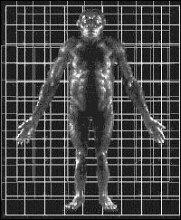

Millennium Man Tries to Walk Again
 |
Three years ago, we reported the discovery of Orrorin tugenensis (a.k.a. Millennium Man). We had to translate the technical information from a French web site because the discovery was largely ignored by the English-speaking media. Here are the bones that were known at that time:
|
We hadn't heard any more about Millennium Man, until this month, when he burst back on the scene with the enthusiastic news release:
Pre-Human Walked Upright 6 Million Years Ago--Study
Thu Sep 2, 5:55 PM ET
WASHINGTON (Reuters) - A chimp-sized human ancestor walked upright 6 million years ago, far earlier than anyone had been able to show before, researchers reported on Thursday.
Specialized X-rays called CAT scans of the top of a fossil thighbone show clear evidence that the creature walked upright, like pre-humans, and not like apes, the researchers said.
Their findings, published in Friday's issue of the journal Science, take the dawn of human gait back another 3 million years from "Lucy," the earliest known pre-human to have walked on two legs.
|
So, we looked in Science to see what the researchers actually said.
|
Twenty fossils representing at least five individuals have been discovered there. Of these, three are portions of femurs critical for determining posture. BAR 1215'00 is a small fragment consisting of the proximal portion of a right femur lacking neck and head and preserving only about 20 mm of the upper shaft below the base of the greater trochanter, which also is missing. BAR 1003'00 comprises approximately half of a proximal left femur, including the entire lesser trochanter but lacking both the greater trochanter and the femoral head. The third partial femur, BAR 1002'00, is more complete, including about 200 mm of shaft plus an intact head that is connected to the shaft by a somewhat elongated neck; its anatomical features have been described fully and compared in detail with extant African apes and humans, as well as with Plio-Pleistocene hominids.
The Tugen Hills material apparently is younger than the Chad cranium (Sahelanthropus tchadensis) from the Toros-Menalla locality, the age of which is estimated to be in the range of 6 to 7 million years from faunal correlations with East African sites (mainly Lothagam in Kenya), moderately older than the remains from Ethiopia's Middle Awash valley, which are dated more securely than those from Chad by techniques including biostratigraphic, paleomagnetic, and radioisotopic data to a narrower range of 5.2 to 5.8 Ma. Beyond the different geographic and temporal relations, comparisons among the earliest putative hominids are exacerbated by the paucity of cranial elements in the Tugen material, absence of postcrania associated with the Chad cranium, and the inclusion of just one proximal pedal phalanx among the Middle Awash remains, along with dental elements that are said to display a suite of hominid features.
Despite their temporally intermediate position between the other two early sites that have yielded putative hominids, the Tugen Hills fossils sometimes still are characterized as ambiguous in the features of lower-limb anatomy shared with later members of our lineage. Here, we address this phylogenetic question directly through functional morphology. With up-right posture and habitual or obligate bipedal locomotion accepted as critical adaptive signatures of our lineage, documenting anatomical correlates of these behaviors in BAR 1002'00 would support its hominid status. We used computerized tomography (CT) to quantify the internal distribution of cortical bone in the most ancient femora pertinent to reconstructing hominid origins.
1
|
Let's translate that into plain English!
The first paragraph tells us that seven more bone fragments have been found in the last three years, bringing the total to 20. We haven't been able to find pictures of the new fragments, so we suspect they aren't any more impressive that the ones we've already seen.
The three long bones in the picture at the beginning of our essay are leg bones. The longest one is called BAR 1002'00. It is about 8 inches long. They have compared it to the leg bones of living apes and humans, and extinct hominids, and they think BAR 1002'00 looks similar to them.
|
To the untrained eyes, like yours and mine, they also look like the leg bones of dogs or cats, or any other animal with a pelvis that size.
We must remember that they are much smarter than we are, and can discern tiny differences that tell them what kind of animal the bones came from, even if they have never seen the animal. That's how they can produce the wonderful picture below of the reconstructed Millennium Man from a few small bone fragments. They are always right (except when they mistake pig teeth for Nebraska Man teeth).
|

|
The second paragraph tells how they determined the age of Millennium Man. The fossils were found in a rock layer between the layer containing Chad Man and the Middle Awash fossils. Therefore, Millennium Man must be younger than Chad Man, but older than the Middle Awash fossils. The age of Chad Man is known from "faunal correlations with East African sites." In other words, the rocks containing Chad Man contain other fossils of "known age." The "known age" is merely an assumption based on the speculative rate of evolution of other animals. The Middle Awash fossils are "dated more securely ... by techniques including biostratigraphic, paleomagnetic, and radioisotopic data".
Biostratigraphic dating is just faunal correlation. That is, rock layers (strata) are dated by the fossils of the biology (flora and fauna) found in them, and the presumed sequence of biological evolution. Paleomagnetic data is based on the orientation of natural magnets in rocks. These magnets presumably aligned with the Earth's magnetic field when the rocks were deposited in the present position. The direction of the Earth's magnetic field has varied in the past, and is known from (you guessed it) the fossil record. If you are a frequent reader of this newsletter, you of course know that radioactive dating methods are also calibrated using the fossil record. So, the 6 million years is based entirely on the assumption of evolution, and the assumed rate of evolution. If those assumptions are wrong, the date is wrong.
The most telling sentence in the second paragraph is the last one. Let's repeat it for emphasis. "Beyond the different geographic and temporal relations, comparisons among the earliest putative hominids are exacerbated by the paucity of cranial elements in the Tugen material, absence of postcrania associated with the Chad cranium, and the inclusion of just one proximal pedal phalanx among the Middle Awash remains, along with dental elements that are said to display a suite of hominid features."
In plain English, they are saying, "It is difficult to compare the alleged human ancestors because they were found so far apart, and because the presumed ages are so different (so evolutionists would expect lots of change due to evolution). Millennium Man doesn't have a skull, but Chad Man is nothing more than a single skull, so that makes direct comparison very difficult. Millennium Man's best specimens are leg bones; but there is just one foot bone among the Middle Awash fossils, so you can't do much comparison between legs. The Middle Awash fossils are basically just a few teeth that look like they might be human, and have been named Ardipithecus ramidus."
The third paragraph says that even though Millennium Man was found in a rock layer between Chad Man (who, from the shape of his skull, must have walked upright) and Ardipithecus ramidus (who, from the shape of his teeth, must have walked upright), there has been a lot of controversy over whether or not Millennium Man could have walked upright. By definition, hominids have to be able to walk upright. That makes it of utmost importance to prove that Millennium Man walked upright.
The rest of the article in Science consists primarily of measurements, and ratios of those measurements, leading up to the conclusion that the shape of the leg bone is consistent with upright locomotion.
This is great news for French anthropology. If you read French, you'll just love "Orrorin marchait bien sur ses deux jambes !" which proudly proclaims, "La bataille entre Orrorin et Toumaï pour le titre du plus viel ancêtre de l'homme est donc relancée !" [emphasis in the original]
There is a perception that scientists are cold, impassionate, objective people who are not swayed by emotion. But when you look at the vast conclusions based on half-vast data, you can see that isn't true. The analysis of hominid fossils in general and Millennium Man in particular, makes this plainly clear. Conclusions are strongly influenced by national prejudice, personal pride, the desire for fame and fortune, and philosophy.
The general public will read a report like the one from Reuters and think that proof has been found that pre-human ancestors walked upright 6 million years ago. The general public will think that anyone who doesn't believe it is "anti-science."
All we at Science Against Evolution ask is that you examine the evidence for yourself before you make a decision. We know that's hard, because only one side gets reported to the general public. It is hard, too, because the real facts are written in expensive technical journals not generally accessible to the general public, and in such technical language that the general public could not understand them. That's why we use this newsletter to disclose "things evolutionists don't want you to know."
Footnotes:
1
Science, 3 September 2004, Vol 305, Issue 5689, "External and Internal Morphology of the BAR 1002'00 Orrorin tugenensis Femur", pages 1450-1453
(Ev)